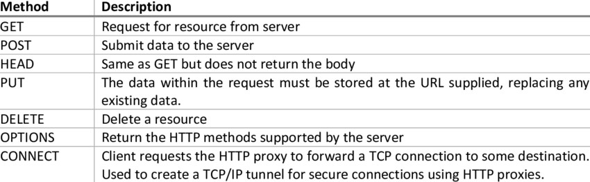

URL:
En [1], Uniform Resoruce Locator(URL), es usado para especificar direcciones en la World Wide Web.
El URL es una clave fundamental de identificación para cualquier recurso conectado a Internet
MIME:
De acuerdo con University of Sussex, MIME es el acrónimo para Multiporpuse Internet Mail Extensions. MIME es un estandar , cuya función principal es permitir que archivos de texto sean adjuntados en un mensaje de correo
Métodos de petición y códigos de status HTTP:
Los métodos de peticón son commandos que dan dan instrucciones al servidor sobre lo que debe hacer Así como los métodos de petición le dicen que hacer al servidor, los codigos de estatus le dicen al cliente que fue lo que ocurrió, por ejemplo: si la consulta fue exitosa, si hubo un error, etc[3].

XML:
“Extensible Markup Language (XML) es un formato universal para datos y documentos estructurados. Los archivos XML tienen una extensión de archivo de xml. Al igual que HTML, XML utiliza etiquetas (palabras delimitadas por los caracteres > y <) para estructurar los datos del documento”. [4]. Diseñado para guardar y enviar información entre sistemas
XHTML:
Significa Extensible Hypertext Markup Language. Es casi identico a HTML, aunque más erstricto. Es soportado por casi todos los navegadores [5]
HTML5:
Es la quinta versión de HTML. Para usarla es necesario especificar en el doctype. Todas las características de HTML 4 son soportadas. Con esta herramienta es posible crear sitios interactivos y trabajar en conjunto con otras herramientas [6]
JavaScript:
Introducido en 1995 como una forma de agregar programas en las páginas del navegador NetScape Navigator. La mayoría de los navegadores lo soporta. Gracias a JavaScript es posible la interacción interactiva sin la necesidad de recargar la página cada ocasión en la que ocurre algo [7]
PHP:
La página de documentación de PHP [8] menciona que este último es un acrónimo recursivo de Hypertext Preprocessor. Es un lenguaje de código abierto usado para el desarrollo web, el cual se incrusta en HTML
JSP:
Una página JSP (JavaServer Page) es un documentoque contiene dos tipos de texto: datos estáticos, los cuales pueden ser expresados en cualquier formato de texto (como HTML, SVG, WML, XML), y los elementos JSP[9]
Ajax:
Asynchronous JavaScript And XML es una herramienta que permite actualizar la página sin tener que recargar dicha página[10]. Con Ajax es posible acceder a un servidor web desde una página web. Las aplicaciones se corren en el cliente y a la vez se sincronizan con el servidor en el fondo
Referencias:
[1] https://kb.iu.edu/d/adnz
[2] http://www.sussex.ac.uk/its/help/faq?faqid=716
[3] D. Gourley, B.Totty, M. Sayer, S.Reddy y A. Argarwal, HTTP The defininitive guide, 48-49, 2002
[4] https://www.ibm.com/support/knowledgecenter/es/SSEPGG_8.2.0/com.ibm.db2.ii.doc/opt/c0007799.htm
[5] https://www.w3schools.com/html/html_xhtml.asp
[6]
[7]
[8] http://php.net/manual/es/intro-whatis.php
[9] https://docs.oracle.com/javaee/5/tutorial/doc/bnagy.html
[10] https://www.w3schools.com/xml/ajax_intro.asp
acronym, applet, basefont, big, s, frame
¿Cuáles son las diferencias principales entre HTML 4 y HTML5?